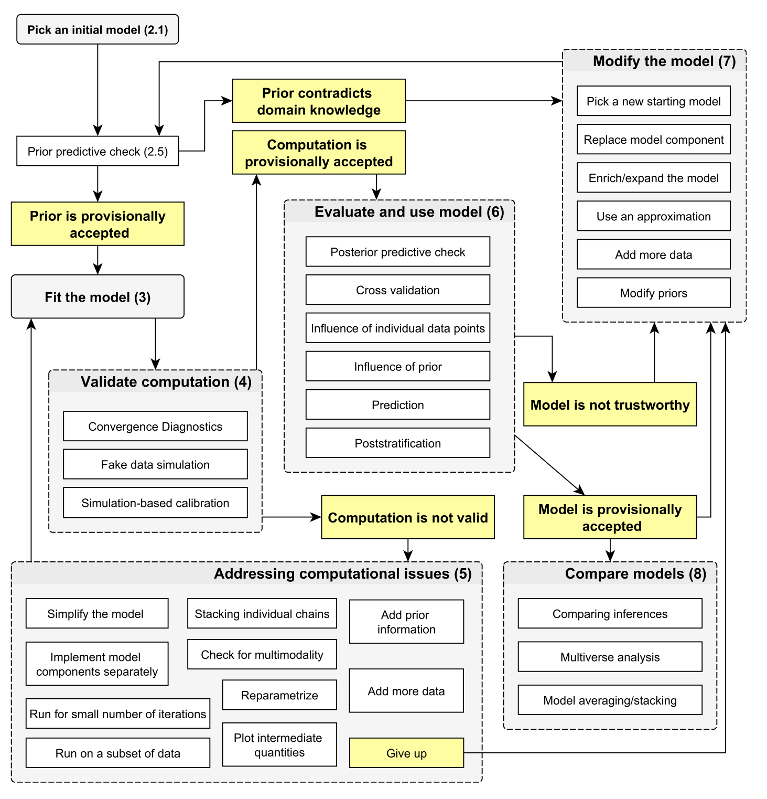
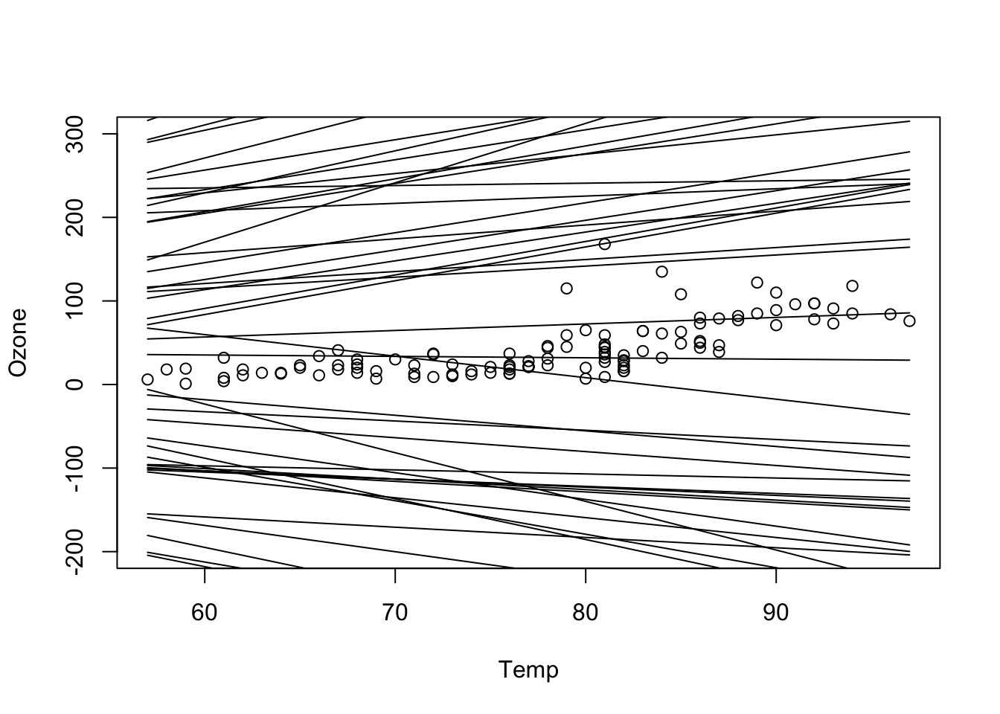
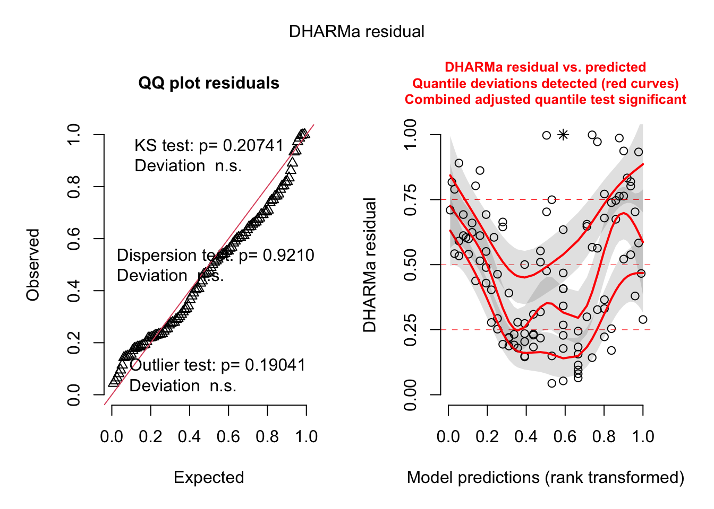
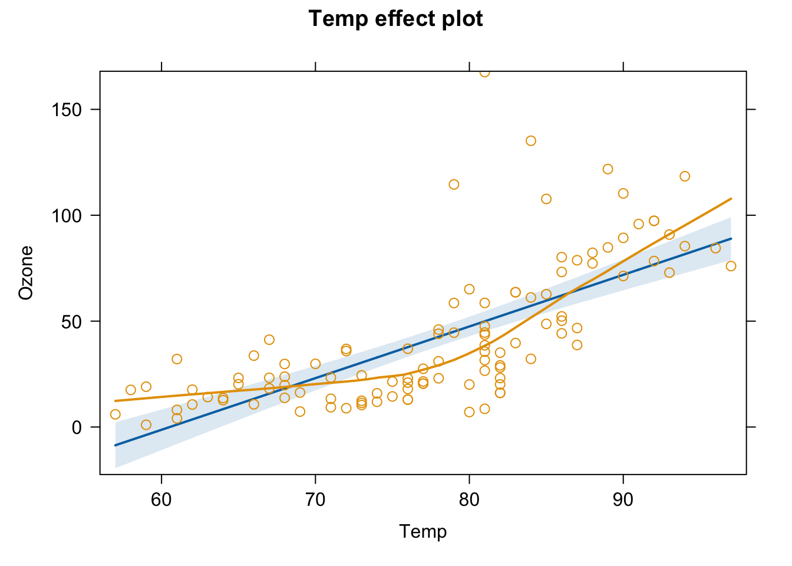
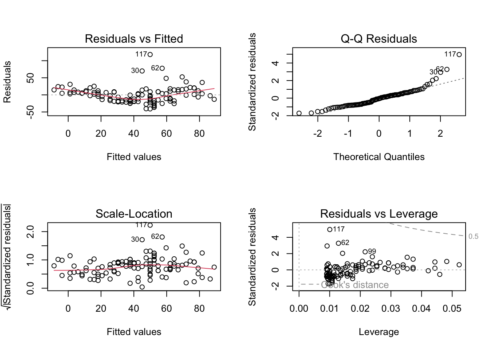

modelCode = "
model{
# Likelihood
for(i in 1:i.max){
mu[i] <- Temp*x[i]+ intercept
y[i] ~ dnorm(mu[i],tau)
}
# Prior distributions
# For location parameters, typical choice is wide normal
intercept ~ dnorm(0,0.0001)
Temp ~ dnorm(0,0.0001)
# For scale parameters, typical choice is decaying
tau ~ dgamma(0.001, 0.001)
sigma <- 1/sqrt(tau) # this line is optional, just in case you want to observe sigma or set sigma (e.g. for inits)
}
"6 Bayesian Workflow
Note
In this chapter, we will discuss the typical steps of a Bayesian analysis workflow, from setting up a model to reporting final results. You will learn
- How to choose an initial model structure and priors, and check them with prior predictive checks
- How to validate the computation itself, e.g. via convergence diagnostics and fake-data simulation
- How to perform posterior predictive checks and residual diagnostics to validate the fitted model
- How prior sensitivity analysis and cross-validation fit into the overall workflow

6.1 Picking an initial model
An initial model will consist of a model structure and priors. For priors, see previous section on prior choice. For the initial model structure, you need to know what structures are available and what their advantage / disadvantage are. This is the same as for all statistical analysis. Thus, all the considerations in https://theoreticalecology.github.io/AdvancedRegressionModels/, sections on model choice apply.
For the following, we will stay with our simple airquality example
6.2 Prior predictive checks
Prior predictive checks mean that we check what predictions would be possible or preferred by the model a prior. We can do this either by removing the data in the code above and observing the parameters or predictions, or by adding a prior predictive block directly in the model, such as the following one:
modelCode = "
model{
intercept2 ~ dnorm(0,0.0001)
Temp2 ~ dnorm(0,0.0001)
for(i in 1:i.max){
muPrior[i] <- Temp2*x[i]+ intercept2
}
}
"When you now observe muPrior, you get an idea about what results are possible with your priors
6.3 Validate computation
6.3.1 Convergence diagnostics
As discussed in section 1.2
6.3.2 Fake data simulation
This means that you simulate data from your model, and check if you can retrieve the same parameters.
6.3.3 Simulation-based calibration
See help of
?BayesianTools::calibrationTest6.4 Posterior model checks
6.4.1 Prior sensitivity
Prior sensitivity means that you will check to what extend results are driven by the prior. To do this, change the prior and look at the results
6.4.2 Posterior predictive checks / residuals
In posterior predictive checks, you look at the posterior model predictions. There are two things you can do:
Posterior predictions = credible interval
Posterior simulations = prediction interval
Usually one does both things together. Technically, in a posterior simulation, we will add a block to the model where we simulate new data as assumed in the likelihood.
modelCode = "
model{
for(i in 1:i.max){
yPosterior[i] ~ dnorm(mu[i],tau)
}
}
"As you see, in the case of a linear regression, this is a very simple expression, but in more complicated models, this can be a longer block. Moreover, note that in hierarchical models, often the question arises on which parameters you want to condition on and on which not. See also comments in
?DHARMa::simulateResidualsLet’s look at a full example with prior and posterior checks:
library(rjags)
library(BayesianTools)
library(DHARMa)
dat = airquality[complete.cases(airquality),]
dat = dat[order(dat$Temp),] # order so that we can later make more convenient line plots
Data = list(y = dat$Ozone,
x = dat$Temp,
i.max = nrow(dat))
modelCode = "
model{
# Likelihood
for(i in 1:i.max){
mu[i] <- Temp*x[i]+ intercept
y[i] ~ dnorm(mu[i],tau)
}
sigma <- 1/sqrt(tau)
# Priors
intercept ~ dnorm(0,0.0001)
Temp ~ dnorm(0,0.0001)
tau ~ dgamma(0.001, 0.001)
# Prior predictive - sample new parameters from prior and make predictions
intercept2 ~ dnorm(0,0.0001)
Temp2 ~ dnorm(0,0.0001)
for(i in 1:i.max){
muPrior[i] <- Temp2*x[i]+ intercept2
}
# Posterior predictive - same as likelihood, but remove data
for(i in 1:i.max){
yPosterior[i] ~ dnorm(mu[i],tau)
}
}
"
jagsModel <- jags.model(file= textConnection(modelCode), data=Data, n.chains = 3)Compiling model graph
Resolving undeclared variables
Allocating nodes
Graph information:
Observed stochastic nodes: 111
Unobserved stochastic nodes: 116
Total graph size: 501
Initializing modelupdate(jagsModel, n.iter = 1000)
Samples <- coda.samples(jagsModel, variable.names = c("intercept","Temp","sigma"), n.iter = 5000)
# Prior predictive analysis
Samples <- coda.samples(jagsModel, variable.names = c("muPrior"), n.iter = 5000)
pred <- getSample(Samples, start = 300)
# plotting the distributions of predictions
plot(Ozone ~ Temp, data = dat, ylim = c(-200, 300))
for(i in 1:nrow(pred)) lines(dat$Temp, pred[i,])
# what we see here: a priori many regression lines are possible. You can change your prior to be more narrow and see how this would push prior space in a certain area
# Posterior predictive analysis - Here we can choose to observe the posterior mean predictions or the observations. We will do both in this case because both are inputs to the DHARMa plots
Samples <- coda.samples(jagsModel, variable.names = c("mu", "yPosterior"), n.iter = 5000)
library(BayesianTools)
library(DHARMa)
x <- getSample(Samples, start = 300)
dim(x)[1] 1051 222# note - previously, we calculated the predictions from the parameters
# here we observe them directly - this is the normal way to calculate the
# posterior predictive distribution
posteriorPredDistr = x[,1:111]
posteriorPredSim = x[,112:222]
sim = createDHARMa(simulatedResponse = t(posteriorPredSim), observedResponse = dat$Ozone, fittedPredictedResponse = apply(posteriorPredDistr, 2, median), integerResponse = F)
plot(sim)
# all additional plots in the DHARMa package are possibleessentially, we see here the same issue as in the standard residual plots
fit <- lm(Ozone ~ Temp, data = dat)
summary(fit)
Call:
lm(formula = Ozone ~ Temp, data = dat)
Residuals:
Min 1Q Median 3Q Max
-40.922 -17.459 -0.874 10.444 118.078
Coefficients:
Estimate Std. Error t value Pr(>|t|)
(Intercept) -147.6461 18.7553 -7.872 2.76e-12 ***
Temp 2.4391 0.2393 10.192 < 2e-16 ***
---
Signif. codes: 0 '***' 0.001 '**' 0.01 '*' 0.05 '.' 0.1 ' ' 1
Residual standard error: 23.92 on 109 degrees of freedom
Multiple R-squared: 0.488, Adjusted R-squared: 0.4833
F-statistic: 103.9 on 1 and 109 DF, p-value: < 2.2e-16library(effects)
plot(allEffects(fit, partial.residuals = T))
par(mfrow = c(2,2))
plot(fit) # residuals
6.4.3 Validation or cross-validation
Validation or cross-validation means that you test the performance of the model on data to which it was not fit. Purpose is to get an idea of overfitting.
6.5 Final inference
6.5.1 Parameters
https://stats.stackexchange.com/questions/86472/posterior-very-different-to-prior-and-likelihood